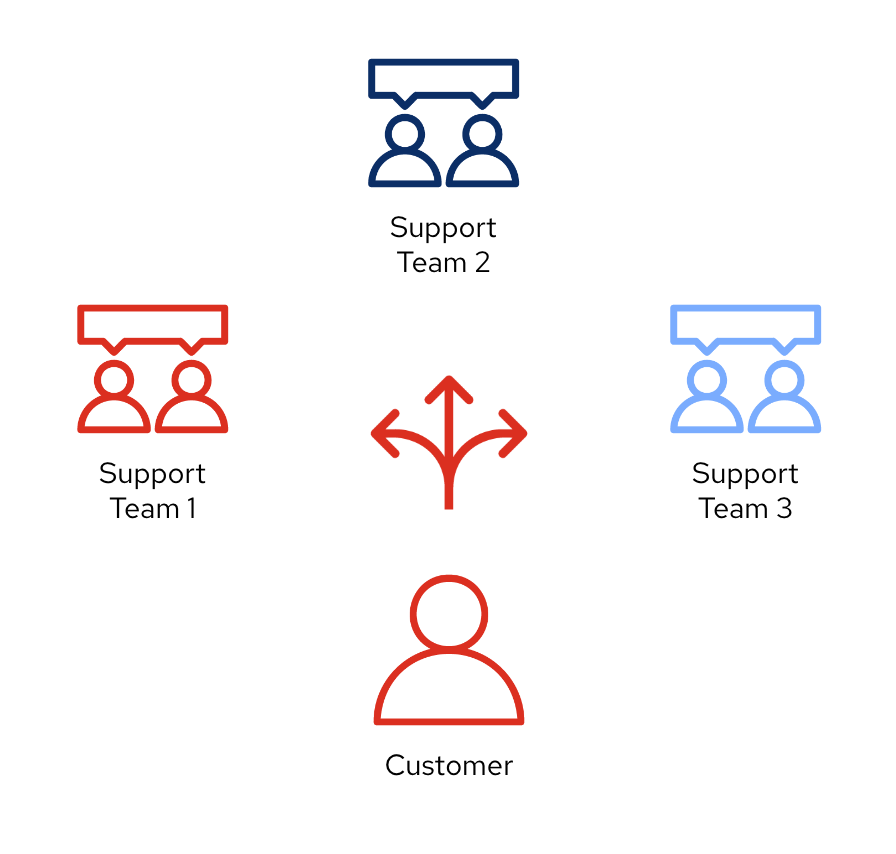
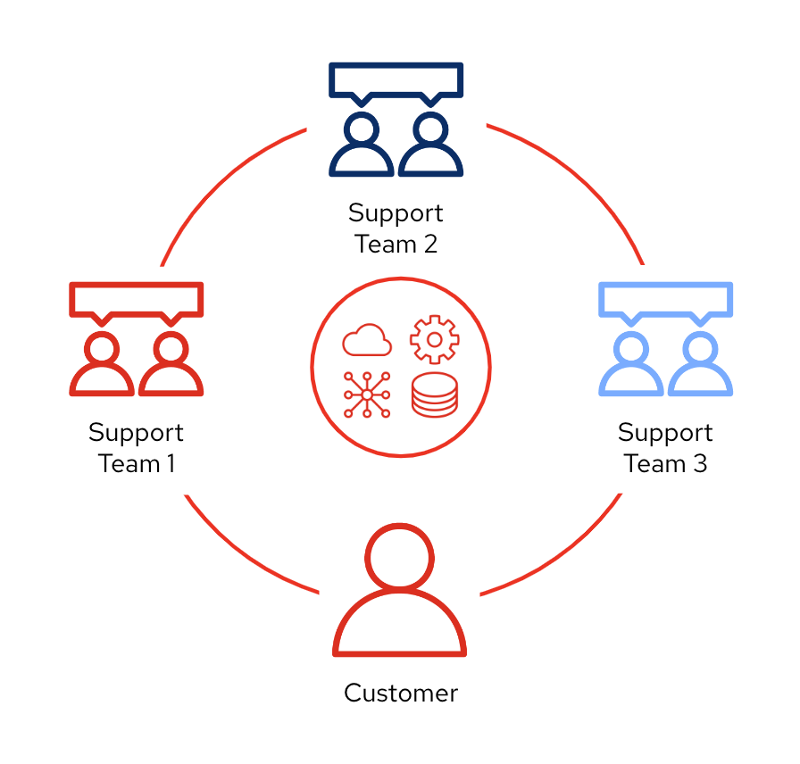
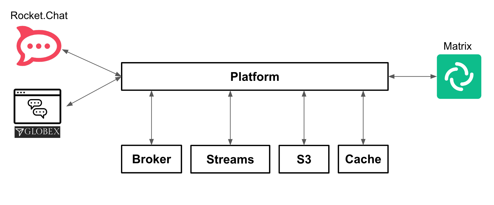
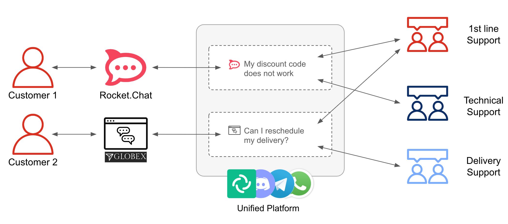

Solution Pattern: Build an extendable Multi-Channel Messaging Platform
As the internet evolves and technologies and trends emerge, so does the way people and organisations connect. Not only is digitalization transforming and automating processes, but also social changes and events are making an impact that is shaping how we interact.
Not so long ago, Email and SMSs started to replace direct phone conversations, and soon after, instant messaging platforms gained popularity over them. Today we have a big landscape of messaging platforms and often we feel divided on which one to use to communicate with family and friends.
On the professional side, organisations mandate one common communication platform for all associates, but often, more than one survives, specially when integrating with external parties, or for example, when companies are acquired and need to be connected.
As an example, let’s discuss how support teams may operate in an organisation. Telephone / email are channels that start getting old fashioned. Organisations may enable instant messaging platforms, which are more cost effective, and provide a closer and friendlier experience for customers in need to contact support teams.
Here we address the scenario mentioned in the example above and propose a solution pattern that implements an architecture fit for a diverse range of relatable scenarios.
Contributors: Bruno Meseguer (Red Hat), Bernard Tison (Red Hat), Jaya Baskaran (Red Hat)
|
Solutions Patterns help you understand the art of the possible with Red Hat’s portfolio, and are not intended to be used as-is for production environments. You are welcome use any part of this solution pattern for your own workloads. |
1. Use cases
Common use cases that can be address with this architecture are:
-
Creation of a multi-channel support service
-
Creation of a unified corporate instant messaging platform
-
Creation of a communications hub for sales agents
-
Storage enablement to persist communication exchanges between participants.
-
Compliance with Government regulatory communication policies.
-
Generate and share transcript documents.
-
Pluggable architecture to enable future platform capabilities.
2. The story behind this solution pattern
Any organisation nowadays generally has support teams attending customer queries/problems. Some of these organisations are large and involve numerous departments, groups and partners.
The picture below illustrates an example where a customer has to liaise with multiple support teams that are independent from each other.

The problem that arises from above is that it is common for support teams to redirect customers and delegate the resolution of problems to other (internal or external) groups or departments. Under such scenario the customer ends up having to navigate different sites and systems in order to obtain a final solution.
This Solution Pattern proposes an implementation to build a platform that addresses similar scenarios by unifying all platforms as one, and plug in additional services associated with those interactions. The platform would provide new collaboration possibilities and new capabilities to help complying with government regulations, like data privacy and security.

The picture above illustrates a system that integrates all platforms and allows communication exchanges between different members from unrelated entities, including systems from where customers communicate.
Under such solution, customers and support agents would be abstracted from other internal/external platforms and would simply participate as global members of one unified platform.
3. The Solution
As an added initiative to the digital transformation, Globex, a fictitious retail store, wants to implement a new, all digital, support service where customers can get instant help from a team of support agents. The goal is to build a pluggable event-driven architecture that allows multiple communication channels and services to integrate with ease to the platform.
See below a simplified representation of the solution:

The platform integrates, in its first iteration, three communication channels. On one end (left in the diagram, Rocket.Chat and Globex’s embedded IM chat), two distinct customer facing platforms , and on the other end, an agent’s channel (right in the diagram, a Matrix-based messenger app).
| Rocket.Chat and Matrix are open-source implementations of direct messaging platforms. While not as popular or ubiquitous as WhatsApp or Discord for example, they can be installed on an OpenShift cluster and do not require registration, making them more suitable for our solution pattern demo environment. |
The multi-channel platform is backed by a variety of technologies provided by Red Hat Application Foundations that enable key capabilities like event-driven processing, decoupled architecture, scalability, persistence and easy to extensibility to accommodate new channels and services.
| Please see the Architecture section for more details on the technologies involved and architecture diagrams. |
4. Collaborative interaction
Because instant messaging platforms are not only designed for private one-to-one communications but also for plural conversations with many participants in a room or channel.
Instant messaging platforms are generally designed both private one-to-one communications and also plural conversations with many participants in a room or channel.
Not only the Solution Pattern proposes a platform where multiple IM systems are connected, but also includes collaborative one-to-many support sessions, meaning a customer being helped by multiple agents if necessary. The diagram below illustrates the proposal.

Notice in the figure above the following concepts:
-
Customers can access the support line from various available channels. In the picture above they can use Rocket.Chat or the chat widget in the Globex web portal.
-
The Unified Platform not only integrates the customer access points but also a series of instant messaging platforms from where different support teams can interact. For illustration purposes, the figure shows Matrix and other very popular IMs available in the market.
-
Lastly, when a customer requests assistance, for example from Rocket.Chat as in the diagram above, it can get help from more than one team at a time. First, a 1st line of support team might welcome the customer to understand the initial problem. Because the issue is of technical nature, the technical support team gets involved.
For simplicity, the demo in the Solution Pattern only includes Matrix as the access points for support agents. Consider the different support members in Matrix as belonging to different support groups (1st line, technical, delivery, etc).